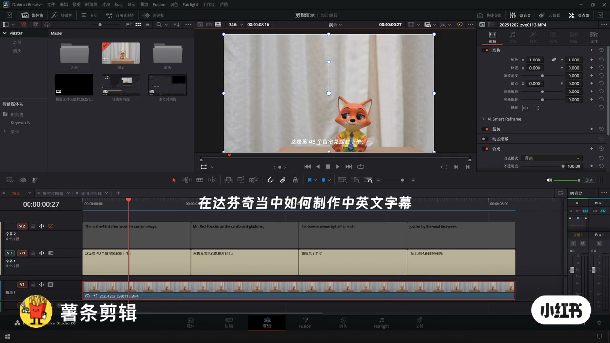
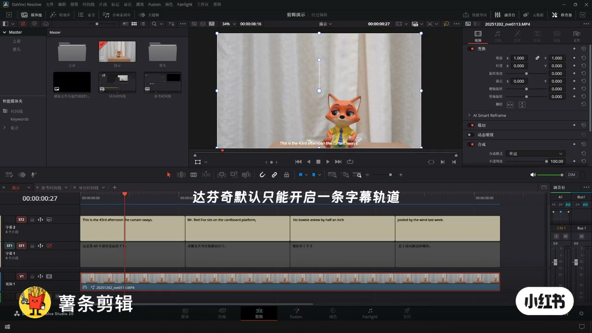
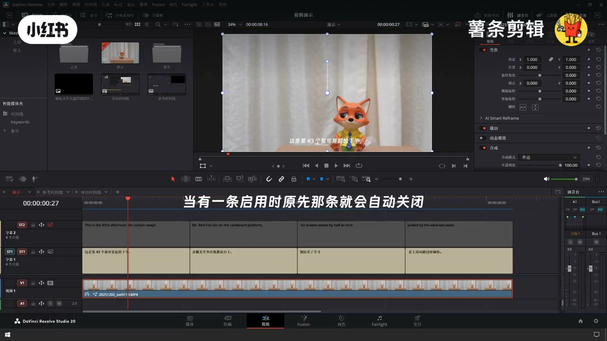
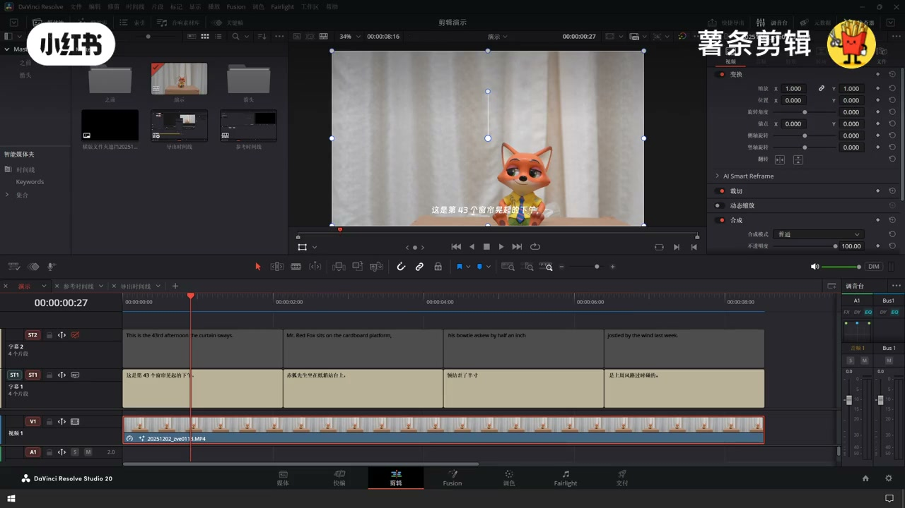
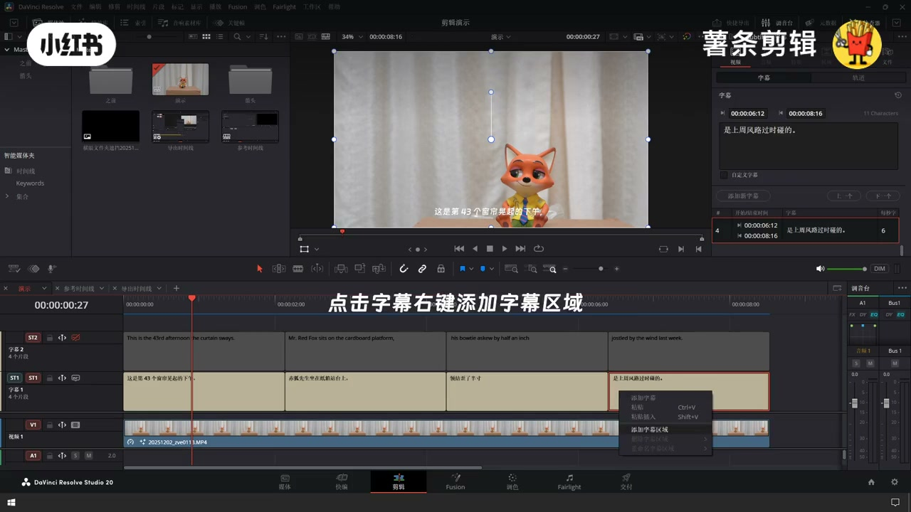
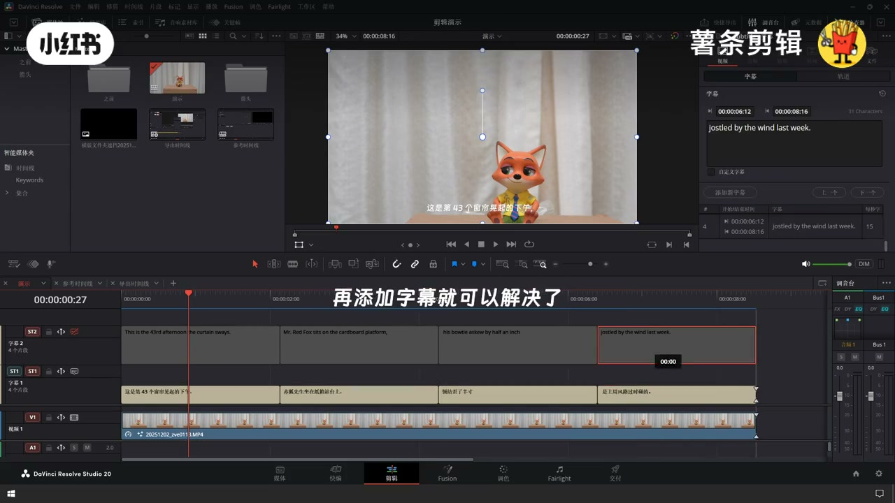
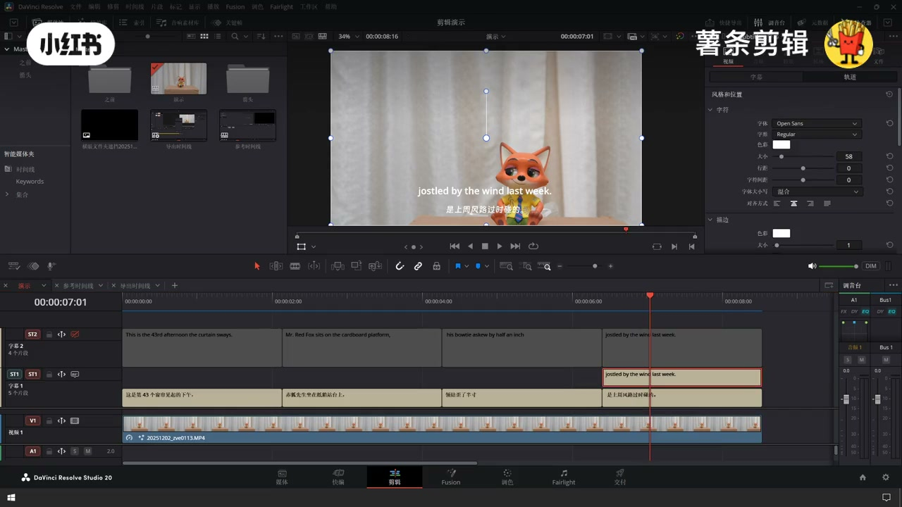
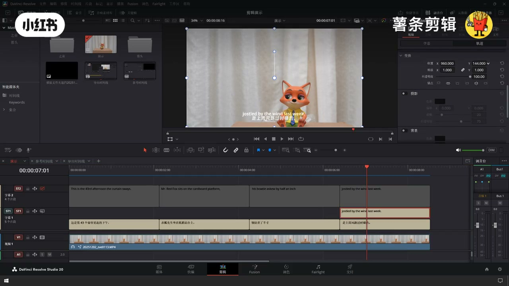

内容要点
薯条演示：达芬奇剪辑页做中英字幕时，默认一次只能启用一条字幕轨；要双语同屏，必须先右键 → 添加字幕区域，再在新区域加另一语言字幕，并在检查器错开字号与位置。
知识结构
[00:00–00:08]
限制
多轨可建，但启用互斥，旧轨自动关。
[00:08–00:16]
解法
添加字幕区域 → 再添加字幕。
[00:16–00:23]
收尾
英上中下；检查器调字体字号位置。
总结
双语同显的关键不是「多建一条 ST」，而是「字幕区域」；先区域、后字幕、再排版。
00:00–00:08默认只能开一条字幕轨
达芬奇剪辑页可以建多条字幕轨（ST1/ST2），但同一时间默认只启用其中一条：再点开另一条时，原先那条会自动关闭。这是中英双语叠字的第一道墙——不是「建了两条轨」就等于「两条同时显示」。

[00:01] 开场：时间线已有 ST1 中文 + ST2 英文两轨，问如何做中英字幕
Opening: timeline already has ST1 Chinese + ST2 English—how to show bilingual subs

[00:04] 坑点：达芬奇默认只能开启一条字幕轨道
Pitfall: Resolve enables only one subtitle track by default

[00:07] 启用一条时，原先那条会自动关闭（无法直接双开）
Turning one on auto-disables the previous track
00:08–00:16右键添加「字幕区域」
正确路径：在字幕轨空白处右键 → 添加字幕区域（Add Subtitle Regions）。字幕区域相当于给时间线开一个可并行的字幕「层」；之后再往新区域里添加字幕条目，就不会把另一轨挤掉。
步骤
- 剪辑页时间线：已有中文轨（ST1）与英文轨（ST2）时可对照本片。
- 右键字幕轨 → 添加字幕区域。
- 在新区域继续「添加字幕」写入另一语言。
- 检查器分别调字体、字号、垂直位置，避免两行重叠。

[00:10] 预览里先只见中文字幕叠在画面上
Preview first shows only the Chinese burn-in

[00:13] 解决：在字幕轨右键 →「添加字幕区域」
Fix: right-click the subtitle track → Add Subtitle Regions

[00:16] 再添加字幕即可——字幕区域让多轨并行显示
Then add more subs—regions allow parallel tracks on screen
00:16–00:23成片双行与参数边界
完成后预览应看到英上中下（或按你排的位置）同时烧录。字号示例：英文 Open Sans Regular、约 58；位置用检查器 Y 轴错开。
适用边界：适合剪辑页字幕轨双语；Fusion 标题或交付烧录外挂 SRT 是另一条路径，本片不覆盖。
踩坑：只加第二条 ST 却不建字幕区域 → 永远只能亮一条；两行字号/位置相同会糊成一团。

[00:19] 成片：英文字幕在上、中文在下同时显示
Result: English above Chinese, both visible

[00:22] 检查器可分别调字体/字号/位置（例：Open Sans、58）
Inspector: set font/size/position per track (e.g. Open Sans, 58)
口述/画面要点（6段）
口播由 Whisper medium 识别；后半以画面大字为准，已核对步骤。
在达芬奇当中如何制作中英文字幕
达芬奇默认只能开启一条字幕轨道
当有一条启用时，原先那条就会自动关闭
（画面）点击字幕右键 → 添加字幕区域
再添加字幕就可以解决了
成片：英文在上、中文在下同时显示